Cimatron 冲压模是专门用于冲压模制造的完整集成 CAD/CAM 软件解决方案--从报价到设计，再到在最短时间内制造出任何复杂性和尺寸的高质量模具。
Cimatron 冲压模集成 CAD/CAM 软件可帮助模具制造商节省时间并提高质量，即使是生产最复杂性的模具。
通过自动数据验证和所有标准化文件格式的精确转换，几秒钟内即可开始工作。灵活的设计刀具系统可轻松处理缝合、非缝合或劣质模型。
将材料、加工时间、加工过程、人工和管理费用等因素考虑在内，生成准确的报价。详细的成本估算还能发现设计问题、优化生产加工过程中的问题，并揭示节省成本的机会。
利用功能强大的坯料设计、料带布局和成型设计工具，简化传送模和级进模的设计。实时仿真和分析有助于消除试错，同时确保效率和准确性。

利用完全集成的 CAD 功能和专业化的加工策略进行粗加工、精加工、钻头和 5 轴模具加工。仿真、碰撞检测和后处理器支持确保了高质量的结果和车间效率。
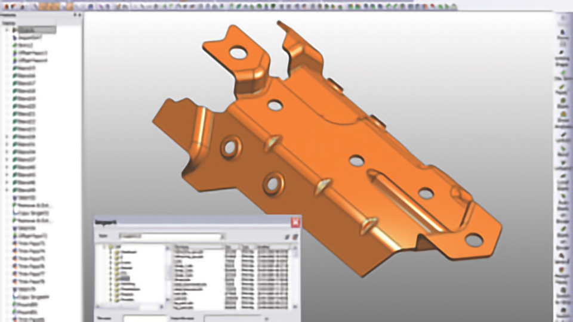
自动数据验证和所有标准化文件格式的精确转换加快了客户数据的导入速度，使得只需几秒钟就可以开始作业。灵活的设计刀具简化了数据的修复和拼接，以及处理非拼接模型和质量较差的数据。
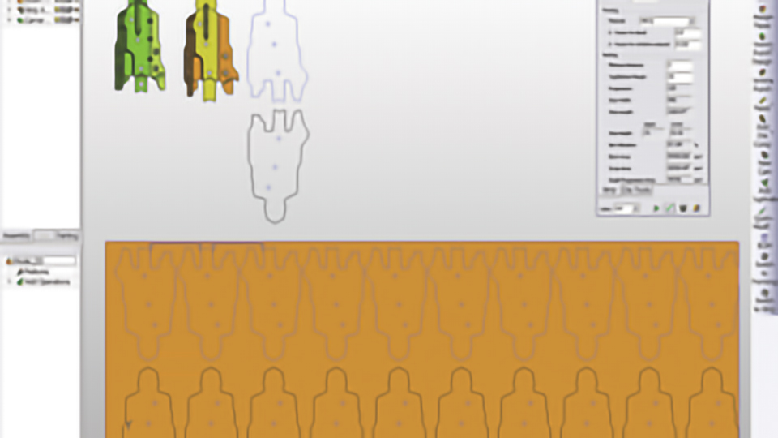
将材料成本、加工时间、加工过程、零件复杂性、人工费和管理费用等重要因素包含在内，意味着企业可以生成真实反映其工作的报价。冲压模具专业人员可以从详细的估算中获益，这些估算可以发现潜在的设计问题，帮助优化生产过程，并突出降低成本的机会。
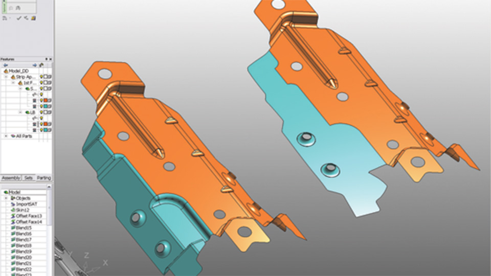
通过将成形阶段创建的信息自动传输到设计环境，提高生产率。通过仿形工具，消除车间的试验和错误，并通过传送模的排版能力确保优化材料使用。强大的实体、曲面和线框功能使模具制造商能够选择最适合其需求的技术，而分析工具则可确保在设计初期解决问题。
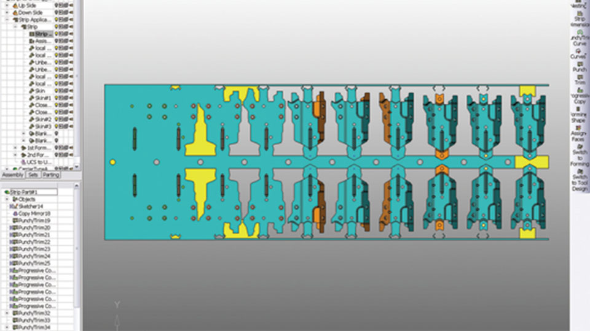
通过简化传递模和级进模的带材设计，提高设计效率。设计人员可以自由轻松地确定工位数、间距、坯料宽度、冲裁位置和角度、行间距离以及其他排版参数。可在实时仿真和验证的基础上进行更改和查看。
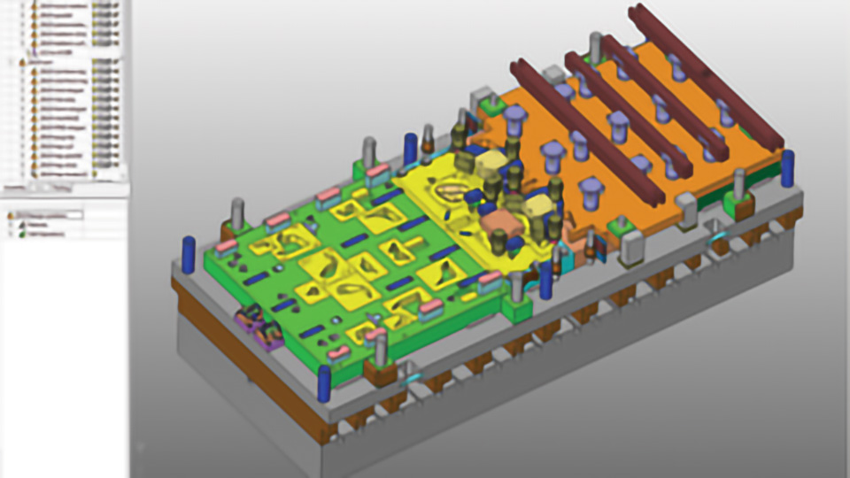
一个完整的现有模架--预装有板件、导向部件和紧固件--可完全适应项目的要求，并在几秒钟内加载。用户定义的零件和市场标准件都可以包含在模座中，而且它们的尺寸也很容易调整。在设计过程的任何节点，都可以使用模具设置列表轻松调整部件尺寸，以适应项目要求。
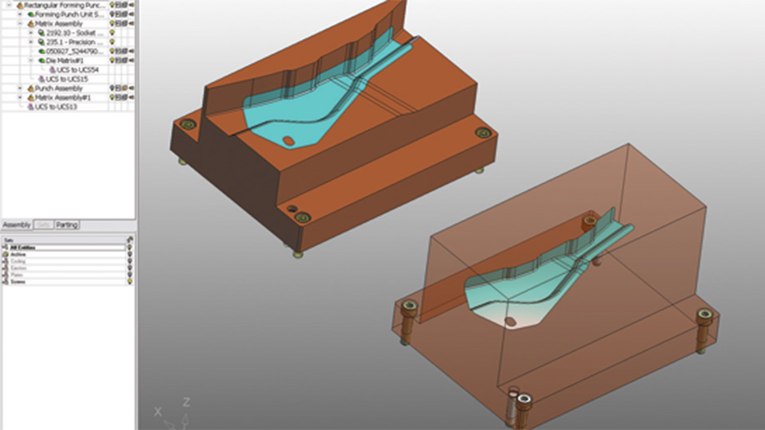
利用专用于模具制造的高级曲面和实体建模工具，简化并加快凸模创建。通过定义轮廓，单次点击即可设计出异形冲头，而用于定位冲头的预定义偏移量可轻松实现自动切削板材。利用自动化工具快速创建成型和弯曲凸模以及切除体，从而缩短设计时间。

浏览当前市场标准件库的全面选择，找到完美的零件。型录零件和子装配可轻松加载到装配中，并自动调整尺寸以匹配主装配的尺寸以及冲孔尺寸等关键设计规格。
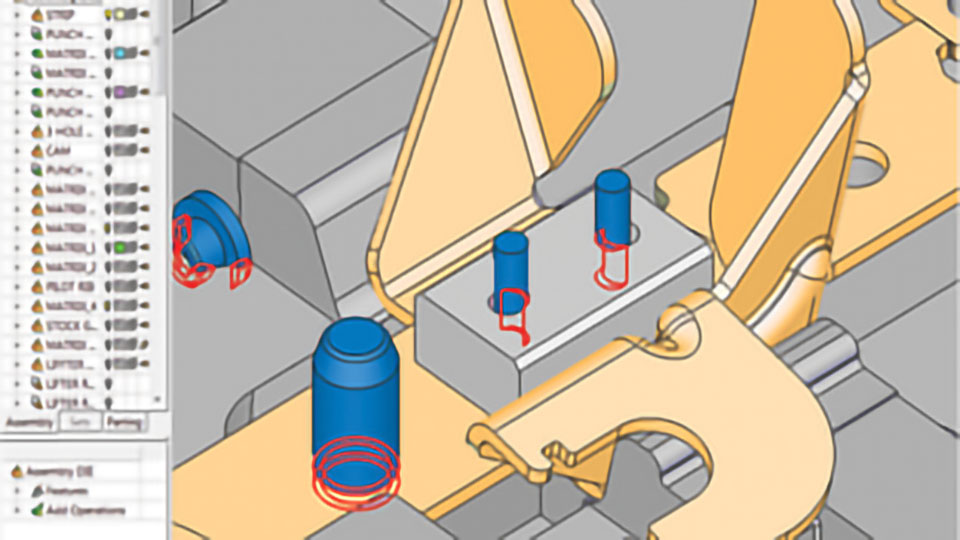
利用集成的碰撞检测和运动仿真能力，在设计过程中验证设计。可视化轴向运动，分析运动，及早发现干扰，消除代价高昂的错误。
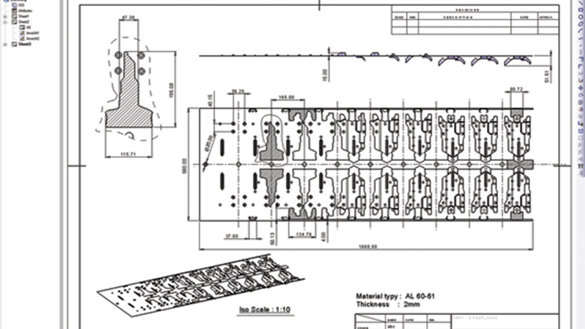
生成包含所有必要信息的图纸，以便订购部件、与车间员工清晰沟通、确保质量并提供客户文档。利用功能强大的工程图选项，可轻松实现工作可视化，同时通过自动化放置中心线、坐标标签等功能节省时间。可创建并重复使用包含客户规格的图纸模板，以提高效率。
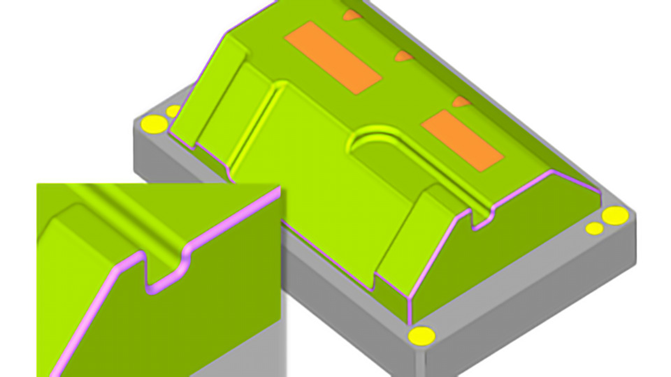
全面的混合 CAD 能力使模具设计人员能够在 CNC 编程环境中结合线框、曲面和实体建模功能。可使用专用的 CAD 工具优化加工，以添加曲面和轮廓、封闭孔和槽、延伸曲面以及应用拔模和倒圆。
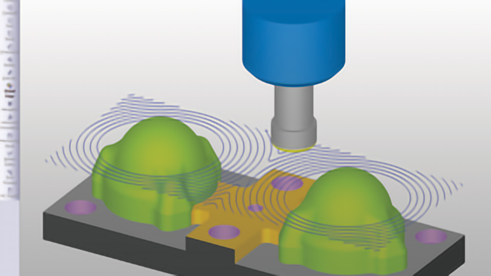
通过安全高效的粗加工策略，在快速去除材料的同时延长刀具寿命。用于高速铣削 (HSM) 操作的专业化刀具路径可确保刀具负载恒定，同时利用螺旋铣削技术和最先进的残料去除技术等。在粗加工和再粗加工操作过程中，自动更新的坯料可防止刀具柄和刀柄碰撞。
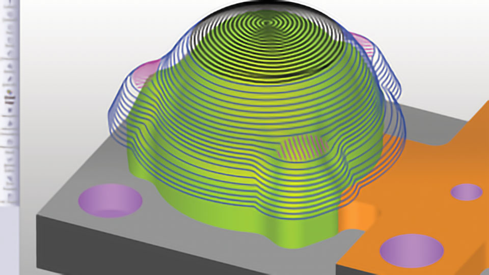
可从丰富的 3 轴到 5 轴优化加工策略中进行选择，安全高效地实现卓越的表面质量。对局部斜度的集成分析使软件能够自动适应性加工策略，从而生产出完美无瑕的无抛光表面质量。
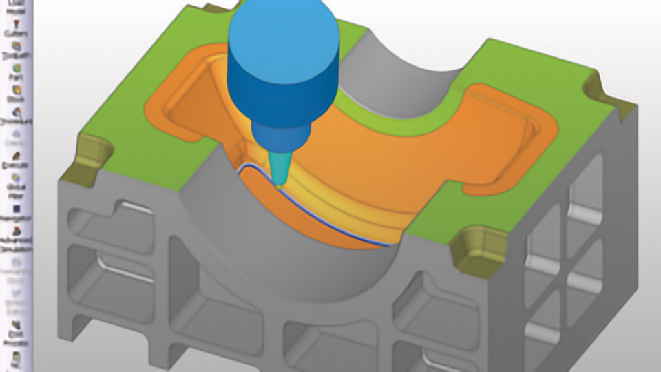
完全 5 轴加工能力可减少设置时间，缩短加工时间，提高精度和质量。专业化的 5 轴加工策略全面支持各种切削刀具，包括锥度刀具、棒棒糖刀具和槽铣削刀具。刀具路径可通过仿真进行验证，仿真包括机床运动学、材料去除和剩余坯料，并以经过验证的后处理器为基础。

为型板加工生成高效刀具路径，包括强大的开槽铣削和仿形铣削选项。创建并重复使用灵活的序列，在数秒内对数百个钻孔进行编程，将编程时间切削 90%。为确保操作保持无碰撞，全面的干涉分析包括零件、剩余坯料和夹持。
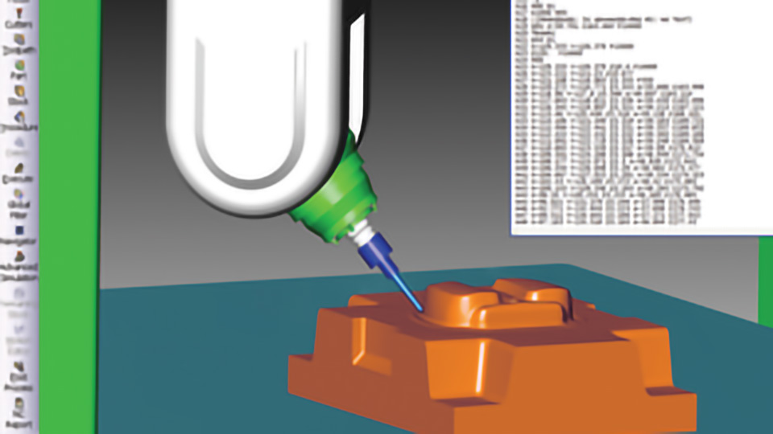
颜色编码显示可在加工前轻松查看切削过程及其结果，并分析剩余材料。系统对机床运动和加工操作进行高级 G 代码仿真，包括针对零件检查刀柄和夹持。全面的后处理器库适用于任何 3 轴和 5 轴机床工具以及所有领先的控制器，确保 CNC 机械能够安全高效地完成加工程序。
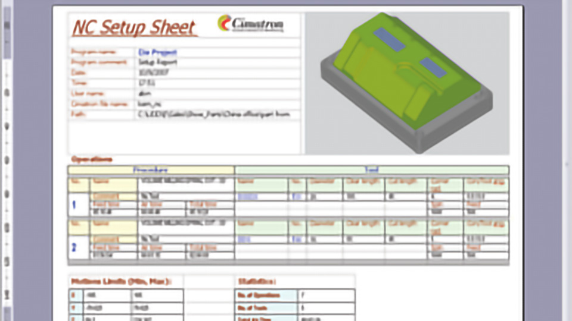
数控设置和刀具表报告可在 CNC 程序后处理时自动生成。Cimatron 可轻松生成定制报告，其中包括公司标识、加工时间、机床限制以及其他用户特定数据和参数，供车间使用。可以捕捉 G 代码输出，以增强铣削控制功能，并用于未来的工作。
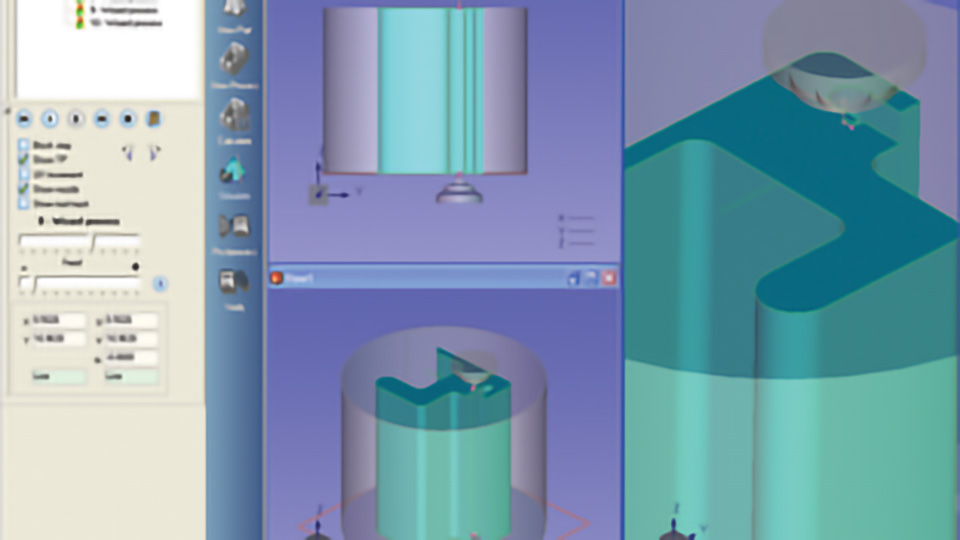
高效编程线切割放电加工机械，并通过集成的放电加工机床数据库确保优化性能。可创建和重复使用可定制的加工流程模板，以提高生产率，减少错误，简化工作流程，同时确保质量。